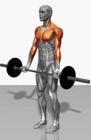

Welcome to Ejercicios efectivos de bíceps
Los nueve mejores ejercicios para entrenar tus bíceps en el gimnasio
2021.06.26 19:47Webedia Vitónica Menú Nuevo ENTRENAMIENTO Y FITNESS NUTRICIÓN Y DIETAS SALUD RUNNING EQUIPAMIENTO Instagram Facebook Youtube Flipboard
Los nueve mejores ejercicios para entrenar tus bíceps en el gimnasio
1 comentario HOY SE HABLA DE Smartwatch Menú Dieta NikeSuscríbete a Vitónica
Síguenos Twitter Facebook Youtube Instagram Flipboard Víctor Falcón @victoorAdmítelo, cuando entrenas el bíceps casi siempre recurres a los dos o tres ejercicios de siempre y por ello hoy te mostramos nueve opciones válidas para hacer en el gimnasio.
La lista a continuación no está ordenada por nivel de activación , no tiene ningún orden en concreto. Todos los ejercicios son válidos y te ayudarán de formas distintas a desarrollar tu músculo . Los tienes con mancuernas, con barra o con el peso corporal y los hay más o menos aislado así que tú decides con cual trabajar.
En Vitónica ¿Por qué nos gusta tanto muscular el bíceps?Curl de bíceps con mancuernas
El más conocido y habitual. Simplemente con dos mancuernas, de pie y en una posición cómoda con la espalda recta y las piernas semiflexionadas elevamos de forma alterna o al mismo tiempo cada muñeca contrayendo el bíceps . Para aumentar el trabajado de todas las porciones del bíceps se recomienda realizar un pequeño giro de muñeca durante el levantamiento.
Curl de bíceps estilo martillo
En la misma posición del ejercicio anterior, evitando fallos comunes , en este caso flexionamos el bíceps y elevamos la mancuerna manteniendo las palmas mirando hacía adentro en todo momento. De esta forma cambiamos el trabajo de cada porción del bíceps y hacemos énfasis en otras partes de este músculo.
Curl de bíceps supino en banco declinado
Para aumentar aún más el trabajo del bíceps nos sentamos en un bando ligeramente declinado y realizamos curl de bíceps. Al cambiar la posición e inclinación del cuerpo estamos aumentando la implicación del bíceps y además, al estar apoyado en el banco, evitamos cualquier balanceo posible.
Curl de Bíceps con Barra Z
Usando la barra Z, también llamada en algunos sitios barra W, realizamos curl de bíceps con ambas manos al mismo tiempo. Podemos hacerlo también con barra plana , pero este tipo de barras no rectas, hacen el movimiento más cómodo y menos lesivo .
Curl de bíceps en banco scott
En el banco de scott con mancuernas o con barra Z logramos aislar aún más el movimiento y trabajar únicamente el bíceps. Al estar apoyados y usar el banco evitamos cualquier tipo de balanceo por lo que hablamos de un ejercicio muy aislado.
En Vitónica ¿Bíceps o tríceps para mejorar el brazo?Dominadas supinas
Las dominadas son un ejercicio estupendo para trabajar tu espalda y también tus bíceps. El agarre cerrado supino aumenta la implicación de estos músculos y te puede ayudar a desarrollar la fuerza y masa muscular de igual forma o mejor que los ejercicios aislados.
Curl de bíceps en polea baja con cuerda
Con una polea podemos trabajar nuestros bíceps y además, con la cuerda en concreto, podemos conseguir muy buenas sensaciones. Colocando la polea en la parte baja y usando la cuerda que normalmente usamos para hacer tríceps podemos hacer bíceps con un movimiento similar al curl martillo, pero aún más aislado.
Curl de bíceps en polea baja a una mano
En la misma polea, en la misma posición, pero en este caso con el accesorio de una mano podemos trabajar los bíceps de forma aislada, realizando contracciones primero con un brazo y luego con el otro.
En Vitónica Los siete mejores ejercicios para trabajar tus trícepsCurl de bíceps concentrado con mancuernas
Por último, sentados en un banco y apoyando el tríceps en la cara interna de la rodilla podemos realizar el llamado bíceps concentrado . Este es quizás el ejercicio de bíceps más aislado y con él podemos trabajar el bíceps evitando cualquier balanceo o ayuda por parte de otros grupos musculares.
Imágenes | rawpixel
Vídeos | Team.0lympus , FNT Life , FNT Life , XtbanWeekly , AnthoniMontalvan , Marc Rivero Vila , DAVID SOTELINO ENTRENADOR PERSONAL , EvolutionMXtv y AnthoniMontalvan
Vitónica en Instagram
Seguir
Compartir Los nueve mejores ejercicios para entrenar tus bíceps en el gimnasio
Facebook Twitter Flipboard E-mail Temas Entrenamiento BicepsCompartir
Facebook Twitter Flipboard E-mail Comentarios cerradosLos mejores comentarios:
Ver 1 comentarios
Temas de interés quinoa crossfit fitbit pilates ejercicios yoga adelgazar andando ayuno intermitente tofu adelgazar sin dieta pastillas adelgazar mercadona dieta keto dieta disociada comida a domicilio Inicio Lesiones Dietas Recetas Saludables Musculación Entrenamiento Alimentos Yoga Abdominales Rutinas Suplementos HIIT CardioVer más temas
Síguenos Twitter Facebook Youtube Instagram Flipboard E-mail Vitónica TV Lo mejor Equipo editorial Contacta con nosotrosMás sitios que te gustarán
Xataka Trendencias Poprosa EspinofExplora en nuestros medios
Tecnología Móviles, tablets, aplicaciones, videojuegos, fotografía, domótica Xataka Xataka Móvil Xataka Foto Xataka Android Xataka Smart Home Xataka Windows Xataka Ciencia Applesfera Genbeta Magnet Mundo Xiaomi Videojuegos Consolas, juegos, PC, PS4, Switch, Nintendo 3DS y Xbox 3DJuegos Vida Extra IGN Millenium Entretenimiento Series, cine, estrenos en cartelera, premios, rodajes, nuevas películas, televisión Sensacine Espinof Gastronomía Recetas, recetas de cocina fácil, pinchos, tapas, postres Directo al Paladar Estilo de vida Moda, belleza, estilo, salud, fitness, familia, gastronomía, decoración, famosos Vitónica Trendencias Trendencias Hombre Decoesfera Compradiccion Poprosa Latinoamérica Publicaciones de México Xataka México Directo al Paladar México Sensacine México 3DJuegos México Aviso legal Condiciones de uso Condiciones de uso de cookies Publicidad InicioReciente
Los mejores deportes para hacer con niños al aire libre Pasar mucho tiempo sentado acelera el envejecimiento considerablemente Menú de batch cooking fresco y sano para resolver fácilmente tus comidas en verano Escarpines con los que disfrutar de deportes y actividades acuáticas este verano Siete sujetadores deportivos con distintos niveles de sujeción que fichamos en las rebajas de Nike Nike inicia sus rebajas: zapatillas de running, zapatillas de entrenamiento y ropa deportiva con grandes descuentos Los cinco mejores consejos para nadadores principiantes ¿Calidad o cantidad? Qué tiene más importancia en una dieta para adelgazar 13 recetas de gazpacho alejadas del tradicional, saludables y sorprendentes Peso muerto convencional, sumo, piernas rígidas y rumano: ¿cuáles son sus diferencias? 19 prendas de ropa y accesorios para jugar a pádel que puedes encontrar en Decathlon Si estás buscando un GPS para tus aventuras en bici echa un vistazo a este Garmin por menos de 200 euros en Decathlon Guía para principiantes (X): Flexiones de brazos en suelo Rebajas de hasta el 50% en Adidas: zapatillas, camisetas y pantalones al mejor precio Cinco consejos para prevenir un golpe de calor Los 11 pescados más saciantes para la dieta por su alto contenido proteico En qué fijarnos al leer las etiquetas nutricionales de los gazpachos y salmorejos de supermercado para elegir el más saludable El equipamiento con el que ir preparado a tu próxima acampada o ruta de senderismo 11 sopas y cremas frías saludables, aptas para perder peso con una dieta keto o cetogénica Todo lo que debes saber para realizar la flexión de brazos perfecta, sacar el máximo provecho y evitar lesionesVer más artículos
Vitónica TV
El desayuno NO es la comida más importante del día Xiaomi Mi Smart Band 6: tan RECOMENDABLE e IMPERFECTA como siempre Xiaomi Mi Watch Lite, análisis: PERFECTO PARA SER TU PRIMER SMARTWATCHVer más vídeos
Síguenos Twitter Facebook Youtube Instagram FlipboardEn Vitónica hablamos de
Lesiones Dietas Recetas Saludables Musculación Entrenamiento Alimentos Yoga Abdominales Rutinas Suplementos HIIT CardioVer más temas
SubirWebedia
Tecnología
Xataka Xataka Móvil Xataka Foto Xataka Android Xataka Smart Home Xataka Windows Xataka Ciencia Applesfera Genbeta Magnet Mundo XiaomiVideojuegos
3DJuegos Vida Extra IGN MilleniumEntretenimiento
Sensacine EspinofGastronomía
Directo al PaladarEstilo de vida
Vitónica Trendencias Trendencias Hombre Decoesfera Compradiccion PoprosaLatinoamérica
Xataka México 3DJuegos México Sensacine México Directo al Paladar México Webedia Xataka Vida Extra Espinof Genbeta Directo al Paladar Xataka Ciencia Trendencias Applesfera Xataka Móvil Decoesfera Vitónica Xataka Foto Trendencias Hombre Xataka Android Xataka Smart Home Xataka Windows Magnet Compradiccion 3DJuegos Sensacine IGN Millenium Poprosa Mundo XiaomiTecnología
Xataka Xataka Móvil Xataka Foto Xataka Android Xataka Smart Home Xataka Windows Xataka Ciencia Applesfera Genbeta Magnet Mundo XiaomiVideojuegos
3DJuegos Vida Extra IGN MilleniumEntretenimiento
Sensacine EspinofGastronomía
Directo al PaladarEstilo de vida
Vitónica Trendencias Trendencias Hombre Decoesfera Compradiccion Poprosa